Fixed-Point Fast Fourier Transform (FFT)
This demo shows you how to convert a textbook version of the Fast Fourier Transform (FFT) algorithm into fixed-point MATLAB® code and fixed-point C-code.
For comparison purposes, the FFT block from the Signal Processing Blockset™ is used at the end of this demo to compute a fixed-point FFT. To use the FFT block to compute a fixed-point FFT, you must have licenses for Simulink®, Simulink® Fixed Point™ and Signal Processing Blockset™.
Contents
- Setup
- Implementing the Textbook FFT Algorithm in MATLAB
- Verifying your Floating-Point code in MATLAB
- Identifying Fixed-Point Issues in MATLAB
- Modifying the Algorithm in MATLAB to Address Fixed-Point Issues
- Converting Fixed-Point MATLAB code to C-code using the Embedded MATLAB® Subset
- Converting Fixed-Point MATLAB Code to Hand-Written C-Code
- Debugging C-Code by Comparing it to your Fixed-Point MATLAB Code
- Considering Alternate Implementations of the FFT
- Computing a Fixed-Point FFT in Signal Processing Blockset™
- Cleanup
- References
Setup
This demo may use display settings or preferences that are different from what you are currently using. To ensure that your current display settings and preferences are not changed by running this demo, the demo automatically saves and restores them. The following code captures the current states for any display settings or properties that the demo changes.
% Capture the current state of the display format and set it to 'loose' and % 'long g'. formatAtStartOfThisDemo = get(0,'Format'); formatSpacingAtStartOfThisDemo = get(0,'FormatSpacing'); format loose format long g % Capture the current state of and reset the fi display and logging % preferences to the factory settings. fiprefAtStartOfThisDemo = get(fipref); reset(fipref); % Capture the present state of and reset the global fimath to the factory % settings. globalFimathAtStartOfThisDemo = fimath; resetglobalfimath;
Implementing the Textbook FFT Algorithm in MATLAB
FFT is a complex-valued linear transformation from the time domain to the frequency domain. For example, if you construct a vector as the sum of two sinusoids and transform it with the FFT, you can see the peaks of the frequencies in the FFT magnitude plot.
n = 64; % Number of points Fs = 4; % Sampling frequency in Hz t = (0:(n-1))/Fs; % Time vector f = linspace(0,Fs,n); % Frequency vector f0 = .2; f1 = .5; % Frequencies, in Hz x0 = cos(2*pi*f0*t) + 0.55*cos(2*pi*f1*t); % Time-domain signal y = fft(x0); % Frequency-domain transformation figure(gcf); clf subplot(211); plot(t,x0,'b.-'); xlabel('Time (s)'); ylabel('Amplitude');legend('x0') subplot(212); plot(f,abs(y),'m.-'); xlabel('Frequency (Hz)'); ylabel('Magnitude');legend('abs(fft(x0))')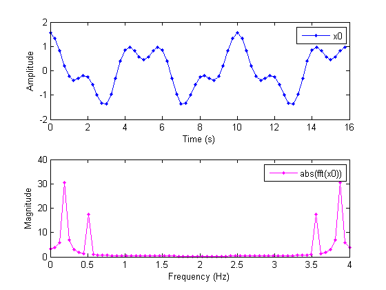
The peaks at 0.2 and 0.5 Hz in the frequency plot correspond to the two sinusoids of the time-domain signal at those frequencies.
Note the reflected peaks at 3.5 and 3.8 Hz. When the input to an FFT is real-valued, as it is in this case, then the output y is conjugate-symmetric:
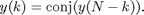
There are many different implementations of the FFT, each having its own costs and benefits. You may find that a different algorithm is better for your application than the one given here. This algorithm is used to provide you with an example of how you might begin your own exploration.
This demo uses the decimation-in-time unit-stride FFT shown in Algorithm 1.6.2 on page 45 of the book Computational Frameworks for the Fast Fourier Transform by Charles Van Loan (http://www.mathworks.com/support/books/book1384.html).
In pseudocode, the algorithm in the textbook is as follows.
Algorithm 1.6.2. If 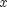 is a complex vector of length 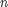 and 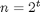, then the following algorithm overwrites with 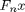.

The textbook algorithm uses zero-based indexing. 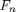 is an n-by-n Fourier-transform matrix, 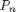 is an n-by-n bit-reversal permutation matrix, and 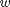 is a complex vector of twiddle factors. The twiddle factors, , are complex roots of unity computed by the following algorithm:
type_nocomments fi_radix2twiddles
function w = fi_radix2twiddles(n)
t = log2(n);
if floor(t) ~= t
error('N must be an exact power of two.');
end
w = zeros(n-1,1);
k=1;
L=2;
while L<=n
theta = 2*pi/L;
for j=0:(L/2 - 1)
w(k) = complex( cos(j*theta), -sin(j*theta) );
k = k + 1;
end
L = L*2;
end
figure(gcf);clf w0 = fi_radix2twiddles(n); polar(angle(w0),abs(w0),'o') title('Twiddle Factors: Complex roots of unity')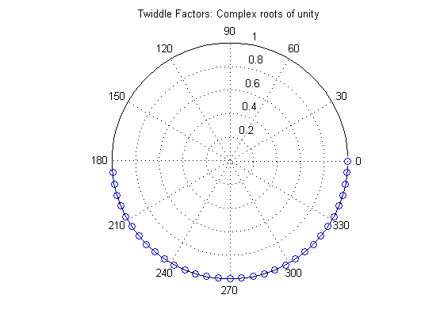
Verifying your Floating-Point code in MATLAB
To implement the algorithm in MATLAB, you can use the fi_bitreverse function to bit-reverse the input sequence, and you must add one to the indices to convert them from zero-based to one-based.
type_nocomments fi_m_radix2fft_algorithm1_6_2
function x = fi_m_radix2fft_algorithm1_6_2(x, w)
n = length(x); t = log2(n);
x = fi_bitreverse(x,n);
for q=1:t
L = 2^q; r = n/L; L2 = L/2;
for k=0:(r-1)
for j=0:(L2-1)
temp = w(L2-1+j+1) * x(k*L+j+L2+1);
x(k*L+j+L2+1) = x(k*L+j+1) - temp;
x(k*L+j+1) = x(k*L+j+1) + temp;
end
end
end
To verify that you correctly implemented the algorithm in MATLAB, run a known signal through it and compare the results to the results produced by the MATLAB FFT function.
y = fi_m_radix2fft_algorithm1_6_2(x0, w0); y0 = fft(x0); % MATLAB's built-in FFT for comparison fi_fft_demo_plot(x0,y,y0,Fs,'Double data', {'FFT Algorithm 1.6.2','Built-in FFT'});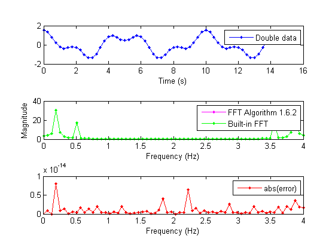
Because the error is within tolerance of the MATLAB built-in FFT function, you know you have correctly implemented the algorithm.
Identifying Fixed-Point Issues in MATLAB
Now, try converting the data to fixed-point and see if the algorithm still looks good. In this first pass, you use all the defaults for signed fixed-point data by using the sfi constructor.
x = sfi(x0); % Convert to signed fixed-point w = sfi(w0); % Convert to signed fixed-point % Re-run the same algorithm with the fixed-point inputs y = fi_m_radix2fft_algorithm1_6_2(x,w); fi_fft_demo_plot(x,y,y0,Fs,'Fixed-point data', ... {'Fixed-point FFT Algorithm 1.6.2','Built-in'});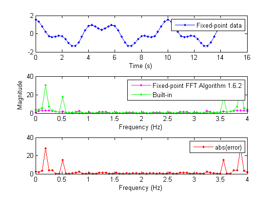
Note that the magnitude plot (center) of the fixed-point FFT does not resemble the plot of the built-in FFT. The error (bottom plot) is much larger than what you would expect to see for round off error, so it is likely that overflow has occurred.
Modifying the Algorithm in MATLAB to Address Fixed-Point Issues
The magnitude of an individual bin in the FFT grows, at most, by a factor of n, where n is the length of the FFT. Hence, by scaling your data by 1/n, you can prevent overflow from occurring for any input.
When you scale only the input to the first stage of a length-n FFT by 1/n, you obtain a noise-to-signal ratio proportional to n^2 [Oppenheim & Schafer 1989, equation 9.101], [Welch 1969].
However, if you scale the input to each of the stages of the FFT by 1/2, you can obtain an overall scaling of 1/n and produce a noise-to-signal ratio proportional to n [Oppenheim & Schafer 1989, equation 9.105], [Welch 1969].
An efficient way to scale by 1/2 in fixed-point is to right-shift the data. To do this, you use the bit shift right arithmetic function bitsra. After scaling each stage of the FFT, your algorithm becomes:
type_nocomments_nosubfunctions fi_m_radix2fft_withscaling
function xc = fi_m_radix2fft_withscaling(x, w)
n = length(x); t = log2(n);
x = fi_bitreverse(x,n);
xc = complex(x,0);
for q=1:t
L = 2^q; r = n/L; L2 = L/2;
for k=0:(r-1)
for j=0:(L2-1)
temp = w(L2-1+j+1) * xc(k*L+j+L2+1);
xc(k*L+j+L2+1) = bitsra(xc(k*L+j+1) - temp, 1);
xc(k*L+j+1) = bitsra(xc(k*L+j+1) + temp, 1);
end
end
end
Run the scaled algorithm with fixed-point data.
x = sfi(x0); w = sfi(w0); y = fi_m_radix2fft_withscaling(x,w);
fi_fft_demo_plot(x, y, y0/n, Fs, 'Fixed-point data', ... {'Fixed-point FFT with scaling','Scaled built-in'});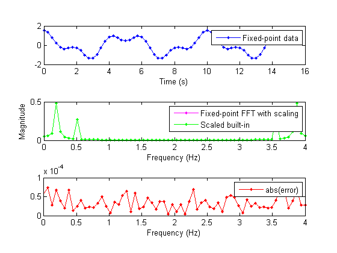
You can see that the scaled fixed-point FFT algorithm now matches the built-in FFT to a tolerance that is expected for 16-bit fixed-point data.
Converting Fixed-Point MATLAB code to C-code using the Embedded MATLAB® Subset
Once you have a working fixed-point algorithm with no overflows, you can convert it to C-code with the following constraints:
- The data is represented by 16-bit integers.
- Products and sums are computed in 32-bit integers.
To set up your fixed-point MATLAB code to behave like C-code, use the globalfimath object with the following settings.
*Keep the least-significant bits of products and sums. *Compute products and sums in 32 bits.
Although the overflow characteristics of signed integers in C-code is not specified by the ANSII standard, it typically wraps on overflow. Since you are right-shifting and letting the bits fall off the end in C-code, set the rounding mode in MATLAB to be floor.
When attached to a fi object, fimath objects define the arithmetic attributes of that fi object. If a fi object does not have an attached fimath object, the global fimath determines the arithmetic attributes of the fi object. Use of the global fimath is encouraged.
G = globalfimath; G.ProductMode = 'KeepLSB'; G.ProductWordLength = 32; G.SumMode = 'KeepLSB'; G.SumWordLength = 32; G.OverflowMode = 'wrap'; G.RoundMode = 'floor'; G.CastBeforeSum = true;
You must also specify a word length for your data. You can let the scaling of input x be set automatically by best-precision scaling, but you can specify fractional scaling for the twiddle factors, w, since you know that they are complex sinusoids whose real and imaginary parts are between +1 and -1. The sfi constructor uses a RoundMode of 'nearest' and OverflowMode of 'saturate' to quantize the initial value, regardless of the settings of the global fimath.
wordlength = 16; x = sfi(x0, wordlength); w = sfi(w0, wordlength, wordlength-1);
y = fi_m_radix2fft_withscaling(x,w); fi_fft_demo_plot(x, y, y0/n, Fs, 'Fixed-point data', ... {'Fixed-point FFT with C attributes','Scaled built-in'});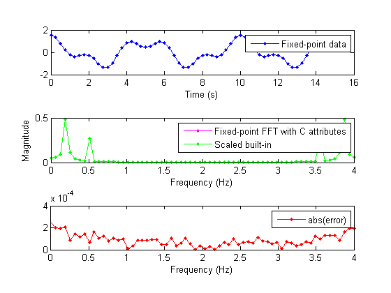
You can compile the fixed-point MATLAB code into a C-MEX function using the Embedded MATLAB C-MEX generation function emlmex. The resulting fixed-point C-MEX function typically runs faster than your fixed-point MATLAB code, especially when you are using large inputs.
The emlmex function compiles the fi_m_radix2fft_withscaling file into a C-MEX function. The emlmex function puts the C-MEX function in your current directory. The following code creates a temporary directory for the C-MEX function so the contents of your current directory is not modified.
emlmexdir = [tempdir filesep 'emlmexdir']; if ~exist(emlmexdir,'dir') mkdir(emlmexdir); end emlcurdir = pwd; cd(emlmexdir);
Compile the fi_m_radix2fft_withscaling.m file into a MEX File
emlmex fi_m_radix2fft_withscaling -eg {x,w} -o fi_m_radix2fft_withscaling_mex;
Run the MEX function with the fixed-point inputs
y1 = fi_m_radix2fft_withscaling_mex(x,w); fi_fft_demo_plot(x, y, y1, Fs, 'Fixed-point data', ... {'MATLAB Function','C-MEX Function'});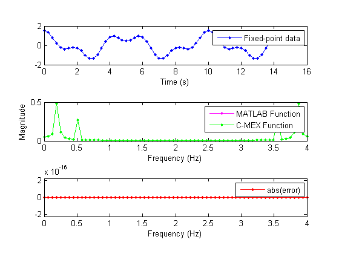
Looking at the error plot, you can see that the output of the compiled C-MEX function is bit-faithful with the output produced by your MATLAB code.
You can also generate embeddable C-code from the MATLAB file using the Embedded MATLAB code generation utility emlc.
if license('test','Simulink') && license('test','Real-Time_Workshop') emlc fi_m_radix2fft_withscaling -eg {x,w} -o fi_m_radix2fft_withscaling_mex; end
Clean up the Temporary Directory
cd(emlcurdir); clear fi_m_radix2fft_withscaling_mex; status = rmdir(emlmexdir,'s'); close all;
Converting Fixed-Point MATLAB Code to Hand-Written C-Code
If you have hand-written C code, you can prototype your algorithm in MATLAB before converting it to C-code.
Here are some things you need to be careful about in C-code that MATLAB handles for you:
- There are no built-in complex data types in C, so you have to work directly with the real and imaginary parts of all variables.
- When you compute the product of the twiddle factors and data in C, you store the result in a 32-bit integer. When integers are multiplied, they keep their least-significant bits. So to align the product with the data before addition, you must left-shift the data by the fraction length of the twiddle factors, and then right-shift by the same amount before overwriting the data.
The source files for the C-MEX function are as follows:
fi_c_radix2fft_withscaling.c fi_c_radix2fft_withscaling.h
type_nocomments fi_c_radix2fft_withscaling.h
void fi_c_radix2fft_withscaling(int16_T* xr, int16_T* xi, int16_T* wr, int16_T* wi,
int n, int nw, int t,
int Wfraclen)
{
int32_T tempr, tempi;
int q, i, j, k;
int n1, n2, n3;
int L, kL, r, L2;
bitreverse(xr,xi,n);
for (q=1; q<=t; q++) {
L = 1; L <<= q;
r = 1; r <<= (t-q);
L2 = L>>1;
kL = 0;
for (k=0; k<r; k++) {
for (j=0; j<L2; j++) {
n3 = kL + j;
n2 = n3 + L2;
n1 = L2 - 1 + j;
tempr = (int32_T)wr[n1]*(int32_T)xr[n2] - (int32_T)wi[n1]*(int32_T)xi[n2];
tempi = (int32_T)wr[n1]*(int32_T)xi[n2] + (int32_T)wi[n1]*(int32_T)xr[n2];
xr[n2] = ((((int32_T)xr[n3])<<Wfraclen) - tempr)>>(Wfraclen+1);
xi[n2] = ((((int32_T)xi[n3])<<Wfraclen) - tempi)>>(Wfraclen+1);
xr[n3] = ((((int32_T)xr[n3])<<Wfraclen) + tempr)>>(Wfraclen+1);
xi[n3] = ((((int32_T)xi[n3])<<Wfraclen) + tempi)>>(Wfraclen+1);
}
kL += L;
}
}
}
To compile the C-MEX file, type
mex fi_c_radix2fft_withscaling.c
at the MATLAB command line.
The input to the C program expects 16-bit signed integers for the data, so you must convert the input to int16. The C-code version of the algorithm also needs to know the fraction length of the twiddle factors:
yint = fi_c_radix2fft_withscaling(int16(x), int16(w), w.fractionlength); fi_fft_demo_plot(int16(x),yint,int16(y),Fs,'Integer data', ... {'C algorithm','MATLAB algorithm'});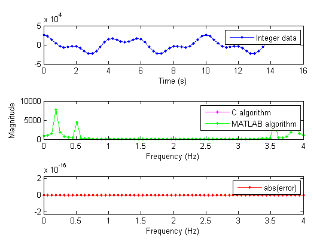
Debugging C-Code by Comparing it to your Fixed-Point MATLAB Code
In the above plots, note that the output of your C-code exactly matches the output of your fixed-point MATLAB code. If your results are different, try the following suggestions to debug the code:
- Set the Fixed-Point Preferences object, fipref, to display integers.
p = fipref;
p.NumberDisplay = 'int';
p.NumericTypeDisplay = 'short';
p.FimathDisplay = 'none';- Set the MATLAB debugger to stop in the MATLAB code, and your C debugger to stop in the C-code at the same place.
- For information on setting breakpoints in MATLAB files, open the MATLAB Help Window and navigate to MATLAB > User Guide > Desktop Tools and Development Environment > Editing and Debugging MATLAB-files > Debugging Process and Features > Setting Breakpoints.
- For information on setting breakpoints in C-MEX files, open the MATLAB Help Window and navigate to MATLAB > User Guide > External Interfaces > Creating C Language MEX-Files > Debugging C Language MEX-Files.
- Step through the MATLAB code and C-code and compare the results. Since you set the fi preferences to display integers, the results should be identical. It should become evident where the programs diverge.
- An alternative to setting breakpoints is to sprinkle mexPrintf statements in the C-code, leave off semicolons in the MATLAB code, and store the output for comparison using the MATLAB diary command.
- Try using simple sequences for your inputs so you know what the output should be. For example:
x = ones(1,n)
or
x = [1 zeros(1,n-1)]
Considering Alternate Implementations of the FFT
An optimization that is often made in the FFT algorithm is to skip multiplies by the twiddle factor W^0 = exp(2*pi*0) = 1, which is the initial multiply in the innermost loop. An example of skipping the multiply by W^0 can be found in these files:
fi_m_radix2fft_skip_w0.m fi_c_radix2fft_skip_w0.c
Scaling after every stage is sufficient to guarantee that no overflow will occur for any input; however it is not always necessary. Another method of scaling is block floating-point in which scaling is only done when an overflow is detected. An example of block floating-point scaling can be found in these files:
fi_m_radix2fft_blockfloatingpoint.m fi_c_radix2fft_blockfloatingpoint.c
Computing a Fixed-Point FFT in Signal Processing Blockset™
An FFT block is available in Signal Processing Blockset, and with a Simulink® Fixed Point™ license, you can use it for fixed-point applications. We demonstrate it here for comparison. Note that fixed-point objects can be passed in and out of Simulink® via the Signal From Workspace and Signal To Workspace blocks. The algorithm in the blockset optimizes away multiplication by 1 and orders the computations to minimize the number of times it must access the twiddle-factor table.
To open the model, type the following at the MATLAB command line:
fi_mdl_radix2fft_withscaling
To run the model from the MATLAB command line, type the following:
if license('test','Signal_Blocks') && license('test','Fixed-Point_Blocks') simopts = simset('SrcWorkspace','current'); sim('fi_mdl_radix2fft_withscaling',[],simopts) end
Compare the Simulink results with the double results:
if license('test','Signal_Blocks') && license('test','Fixed-Point_Blocks') fi_fft_demo_plot(x, y_sim, y0/n ,Fs, 'data',{'Simulink','Double'}); end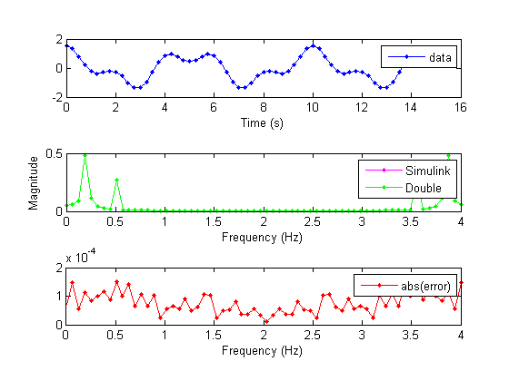
To see the Generated Code Report that was produced by Real-Time Workshop® for this model, click the following link: ../fi_mdl_radix2fft_withscaling_grt_rtw/html/fi_mdl_radix2fft_withscaling_codegen_rpt.html
Cleanup
The following code sets the display settings and preferences back to their original states.
% Reset the display format format(formatAtStartOfThisDemo) format(formatSpacingAtStartOfThisDemo) % Reset the fi display and logging preferences fipref(fiprefAtStartOfThisDemo); % Reset the global fimath globalfimath(globalFimathAtStartOfThisDemo);
References
Charles Van Loan, Computational Frameworks for the Fast Fourier Transform, SIAM, 1992, http://www.mathworks.com/support/books/book1384.html.
Cleve Moler, Numerical Computing with MATLAB, SIAM, 2004, Chapter 8 Fourier Analysis, http://www.mathworks.com/company/aboutus/founders/clevemoler.html, http://www.mathworks.com/support/books/book7638.html.
Alan V. Oppenheim and Ronald W. Schafer, Discrete-Time Signal Processing, Prentice Hall, 1989.
Peter D. Welch, "A Fixed-Point Fast Fourier Transform Error Analysis," IEEE® Transactions on Audio and Electroacoustics, Vol. AU-17, No. 2, June 1969, pp. 151-157.